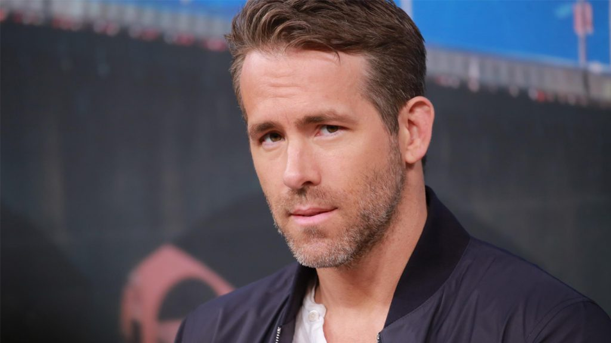
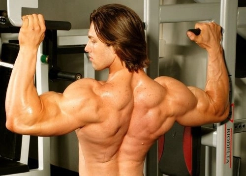

Dwayne Johnson
.webp)
Dwayne Douglas Johnson (Hayward, 2 de maio de 1972), também conhecido pelo seu nome no ringue The Rock, é um ator americano, ex-lutador profissional e ex-jogador de futebol americano universitário pela Universidade de Miami, vencendo o campeonato nacional em 1991 pelo Miami Hurricanes. Também atuou pelo Calgary Stampeders na Liga Canadense de Futebol, sendo cortado após dois meses durante a temporada de 1995. Mais tarde tornou-se lutador profissional como seu avô, Peter Maivia, e seu pai, Rocky Johnson.
Ryan Reynolds
Ryan Rodney Reynolds (Vancouver, 23 de outubro de 1976) é um ator, produtor, roteirista, apresentador e comediante canadense. Ele é conhecido por seus papeis em National Lampoon's Van Wilder, Waiting..., The Amityville Horror, Just Friends, Definitely, Maybe, The Proposal e Buried, bem como Wade Wilson/Deadpool em X-Men Origins: Wolverine e nos filmes Deadpool e Deadpool 2. Seus papéis na televisão incluem Michael "Berg" Bergen, em Two Guys and a Girl. Reynolds também estrelou no filme Green Lantern juntamente com Blake Lively, que se tornaria sua esposa.
Paulo Muzy
Paulo Cavalcante Muzy, 43 anos, filho de um Físico e uma artista plástica formada em Ciências Sociais e psicologia, nasceu em São Carlos-SP e cresceu em Marília-SP. Casado com Roberta Carbonari Muzy, que conhece desde os 13 anos de idade e com quem tem duas filhas, considera o casamento sua maior conquista.